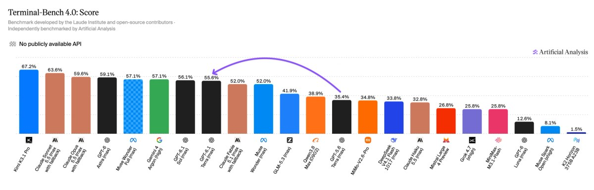

一、导语：一次不讲能力上限、只讲价格的发布
10 月 26 日，OpenAI 上线 GPT-6.1 Terra。这是自 GPT-5.6 Terra 之后第一个 Terra 级模型，官方新闻稿里最关键的一句话不是跑分，而是定价：标准 API 每百万 token 输入 1 美元、缓存输入 0.05 美元、输出 5 美元，比 GPT-5.6 Terra（2/12）和自家旗舰 GPT-6.1 Sol 都便宜 50%。同一时间，订阅侧把它塞进 ChatGPT Work 和 Codex，同样额度能跑的任务数是 GPT-6.1 Sol 的 2 倍。
换句话说，OpenAI 这次卖的不是「更聪明」，而是「同样能干、但你敢整天开着」。在智能体开始替人点鼠标、填表单、读图算账的阶段，这个方向的调整比跑分涨两个点重要得多。
二、背景：为什么现在必须降价
过去一年，前沿模型的定价逻辑是「按能力溢价」——最难的那档最贵，因为只有它做得到。但智能体的成本结构和聊天完全不同：一次任务要跑几十上百轮工具调用，token 消耗是对话的几十倍，成本对任务成功率极其敏感。这让「每任务成本」（cost per task）取代「每 token 价格」成为真正的采购指标。
外部压力也在同步收紧。同一周里，Anthropic 递交 S-1 把「前沿模型是不是真生意」摆上台面，Meta 向 SEC 申报拟募资 950 亿美元 投向 AI 数据中心，Google 则发布实时交互世界模型 Genie 4——算力在加码，能力在趋同，唯一还能拉开差距的变量就是单位成本。Terra 的定价，是对这个格局的直接回应。
三、核心内容：四张成绩单，一个明确的取舍
1. 定价与上下文：把「够用」这一档做到极致
除 1/5 的输入输出价，缓存写入降到每百万 token 1.25 美元，缓存读取 0.05 美元——只有 GPT-5.6 Terra 的四分之一。OpenRouter 同步上线，标注上下文 1.05M token，并称其在 Agents' Last Exam 上与 GPT-6 Astra 得分相当，而每 token 价格约为后者的 十分之一，平均完成任务速度快 3 倍以上。
OpenAI 自己给的对标更有攻击性：最高推理档下，完成同一任务的总成本约为 Claude Opus 5.5 的 九分之一（token 单价四分之一，token 消耗三分之一），速度则是 GPT-6 Astra 与 GPT-6.1 Sol 的 3 倍以上。这类「按任务算账」的口径，去年同期几乎没人用。
2. 智能与成本：中低档落在帕累托前沿，最高档刻意让位
独立评测机构 Artificial Analysis 的结论比官方更克制也更有信息量。在 Intelligence Index v4.3.2 上，Terra 最高档比 GPT-5.6 Terra 高 6 分，单任务成本却是 0.40 美元 vs 1.40 美元；低中档的提升更大，在 7 至 13 分 之间。低档与中档明确落在成本效率帕累托前沿上——但最高档不落，它比 GPT-6.1 Sol 低 4 分、比 GPT-6 Luna 高 10 分。
这 4 分就是产品分层的代价。OpenAI 在文档里写得很直白：最复杂的工程任务，请用 GPT-6.1 Sol 或 GPT-6 Astra。Terra 的定位不是「最强」，而是「一天开八小时也不心疼」。
3. 幻觉率：这次最被低估的进步
比价格更值得记的是事实性。OpenAI 内部那套「诱导出错」测试里，低推理档的错误率从 GPT-5.6 Terra 的 53.6% 降到 16.7%，掉了 37 个百分点；最高档 4.3%，已接近 GPT-6 Astra 与 Sol 的水平。
Artificial Analysis 用私有基准 AA-Omniscience 测出的曲线一致：遇到不知道的问题就硬猜的比例，从 88% 降到 38%；同时准确率还涨了 2 分——不是「多拒答换准确率」，而是真的知道得更多、也更愿意承认不知道。对企业来说，这一项的采购价值通常高于榜单上那几个点。
4. 编码与计算机操作：翻倍，但仍不是最难任务的答案
Terminal-Bench 4.0 上，OpenAI 报的最高档成绩是 50.3%，而 GPT-5.6 Terra 的公开成绩是 21.5%——翻了一倍还多。Artificial Analysis 独立复跑的数字更保守，最高档 35.4%，比上一代高约 20 分，与 GPT-6.1 Sol 的 41.9% 拉近但没追平。两套数字的差距本身说明：这类基准的 harness 差异，已经大到能把「翻倍」说成「接近」。

视觉与操作侧是这次的主打：MMMU-Pro 在每一个推理档都超过 GPT-5.6 Terra，接近 Astra 与 Sol 的水平；OSWorld 2.1 桌面多步任务上，中档就超过了上一代的最好成绩。这也解释了 Greg Brockman 那句略带个人色彩的背书——他说 Terra 的电脑操作速度已经比他本人更快。语言模型的竞争，正式从「谁答得对」转向「谁替你干得快」。
5. 安全：踩到网络安全 Critical 线
按 OpenAI 的 Preparedness Framework，Terra 在网络安全维度达到 Critical 阈值，同时继承 GPT-6 系列的对齐改进，官方称其对提示注入有较强抵抗、也更愿意主动说明限制。Terra 的系统卡已单独发布，这在低价高用量模型上是必须的——它能干的活越多，被滥用的路径也越多。
四、各方反应：竞品的沉默与开发者的算账
开发者社区的第一反应是翻价格表而不是翻榜单：把 Claude Opus 5.5、GPT-6 Astra 的单价按一次智能体任务的实际 token 消耗折算，Terra 落点普遍在对方的 1/5 到 1/9 之间。对做批处理、客服工单、表单录入这类「量大、容错中等」的场景，这是个直接改写毛利的数字。
“Terra continues to advance the cost-intelligence frontier across our model families, providing a new balance of speed, capability, and cost.”
Artificial Analysis 的评价则像一句提醒：Terra 只在低、中、xhigh 三档贴着前沿，其他档位落在前沿之后。意思是买它要挑档位，无脑拉满性价比反而变差——这对习惯了「最高档最划算」的团队是个新的操作习惯。
五、深度解读：模型家族开始像芯片一样分档
把 Terra、Sol、Luna、Astra 摆在一起看，OpenAI 的产品结构已经很清楚了：Astra 与 Sol 卖能力上限，Terra 卖每任务成本，Luna 卖绝对低价。这不是「一个模型打天下」的路线，而是 SKU 路线——按推理档位和场景切分，用价格把流量导向最合适的硅片。同一套思路，英伟达卖了三十年。
对行业的影响有两层。短期是价格锚点被重新设定：$1/$5 会成为 2026 年下半年中端模型的事实参考价，任何定价高于它的模型都得回答「你多出来的那部分，值不值」。
长期则是竞争维度的迁移。当幻觉率、速度、单位成本都进入可测区间，模型之间的差距会越来越像云厂商之间的差距——不是「谁更强」，而是「谁的性价比曲线在你这个 workload 上更靠前」。这也意味着，靠单次榜单爆点建立的优势，保质期正在变短。
对普通用户，最直接的变化在订阅侧：ChatGPT Work 和 Codex 里同样的额度能跑更多任务，Plus、Pro、Enterprise、Edu 全部可用，模型名 gpt-6.1-terra。这不是一次「聪明了一点点」的升级，而是一次「终于敢让它自己去干一整天」的升级。
六、总结
一句话：GPT-6.1 Terra 用 1/5 的价格、1/3 的单任务成本和下降 37 个百分点 的幻觉率，把前沿智能从「按次调用」推向了「按天使用」——代价是它在最难的那 4 分上，主动让给了自家旗舰。